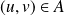
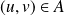

Présentation succincte des graphes
Cette section prend appui sur le cours sur les graphes de Jean-Michel Rey.
Premières définitions
Définition : Graphe
Un graphe est un couple
où
 est un ensemble fini non vide de sommets (ou nœuds) et
est un ensemble fini non vide de sommets (ou nœuds) et
 une partie de
dont les éléments sont appelés arêtes (ou arcs).
une partie de
dont les éléments sont appelés arêtes (ou arcs).
Compléments
Si , le graphe est complet.
Un arc est plus précisément une paire ordonnée de sommets, i.e. une arête orientée : il n'y a qu'un sens de parcours pour un arc alors que pour une arête on peut aller indifféremment d'un sommet à l'autre. Dans le premier cas on parle de graphe orienté, et dans le second cas de graphe non orienté.
Dans les graphes que nous considérerons, on les supposera sans boucles, c'est à dire si alors et on supposera que deux sommets sont reliés par au plus une arête (dans le cas contraire, on parle de multigraphe).
Un graphe est dynamique si on peut lui ajouter, supprimer ou modifier des sommets, des arêtes. Dans le cas contraire il est dit statique.
Autres définitions
Voisins
les voisins ou successeurs d'un sommet
 sont les sommets
sont les sommets
 tels que l'arête (l'arc)

. On dit aussi que
est adjacent à
.
tels que l'arête (l'arc)

. On dit aussi que
est adjacent à
.
Degré
le degré sortant d'un sommet
est le nombre de sommets
qui lui sont adjacents (i.e.
), c'est à dire le nombre de ses successeurs. Le degré entrant de
est le nombre de sommets
auxquels
est adjacent (i.e.
).
On remarque que ces notions sont équivalentes dans le cas d'un graphe non orienté.
Chemin, distance
un chemin de
à
est une suite
telle que pour tout
,
.
 est alors appelée la longueur du chemin.
est alors appelée la longueur du chemin.
Dans ce cas, la distance entre
et
est la plus petite longueur d'un chemin de
à
.
Connexité
le graphe est fortement connexe si pour tout couple
,
, il existe un chemin de
à
et un chemin de
à
. On parle de graphe connexe pour un graphe non orienté.
Une composante fortement connexe est un sous-graphe fortement connexe, maximal.
Pondération
un graphe est pondéré s'il est muni d'une application
 .
.
Implantation d'un graphe
Il existe deux représentations classiques d'un graphe :
par liste d'adjacence ;
par matrice d'adjacence.
Dans les deux cas, les éléments de
sont désignés par des entiers.
liste d'adjacence
On associe à chaque sommet la liste de ses successeurs.
L'intérêt de cette implantation est que la place mémoire requise est linéaire en
(nombre d'arêtes), mais le principal défaut est que l'on ne sait pas en temps constant s'il existe une arête entre deux sommets
 et
et
 , car il faut parcourir les listes.
, car il faut parcourir les listes.
Cette implantation n'est pas celle retenue dans le programme d'informatique pour tous.
matrice d'adjacence
On définit la matrice d'adjacence où .
Lorsque le graphe est non orienté, la matrice est symétrique.
L'intérêt principal de cette implantaion est que l'on sait en temps constant s'il existe une arête entre les sommets
et
. Le défaut majeur est que dans le cas d'un graphe peu dense (
très inférieur à
), la place mémoire utilisée est toujours
.